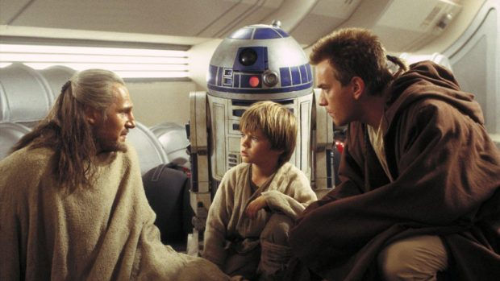

Historia
Obi-Wan Kenobi es un joven aprendiz caballero Jedi bajo la tutela de Qui-Gon Jinn; Anakin Skywalker, quien después será padre de Luke Skywalker y se convertirá en Darth Vader, solamente es un niño de 9 años. Cuando la Federación de Comercio corta todas las rutas al planeta Naboo, Qui-Gon y Obi-Wan son asignados para solucionar el problema.
